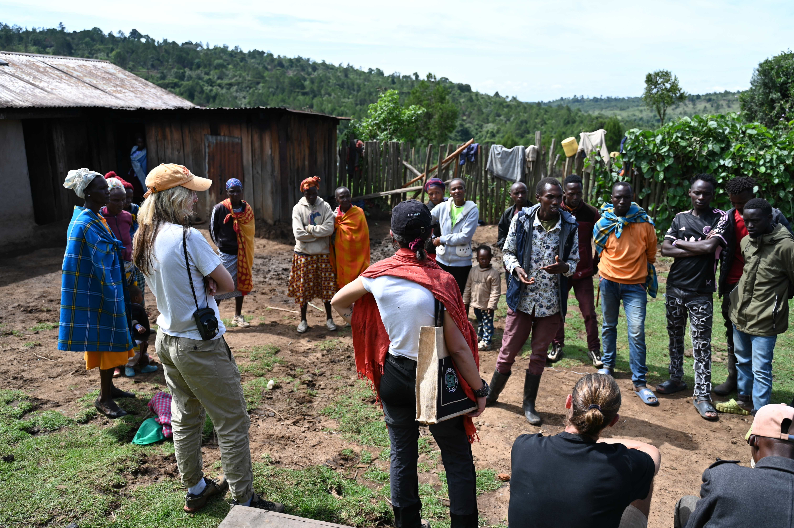

We teach in the ASHE Master's programme at the University of Tübingen and run field training in human behavioural ecology.
Cecilia teaches ASHE-6e Adaptation and the Human Niche in the ASHE Master's programme at the University of Tübingen.
The module explores how humans and other hominins have adapted to the wide range of environments they have lived in, and how genetic, biological and cultural adaptations interact in shaping the human niche.
ASHE students and Master's students from other programmes are welcome to carry out their thesis research in the GPS Lab, on topics ranging from population genetics and computational modelling to archaeology.
Thesis opportunities
In collaboration with the organisation Biomas and Olympia Campbell, we are organising a two-week field course in Kenya: "Socio-ecology of hunter-gatherer and nomadic populations in a changing world". Its main goal is to show students the value of fieldwork in evolutionary and behavioural ecology, and in biological anthropology more broadly, among societies living nomadic lifestyles or that have only recently transitioned to sedentism.
Students are introduced to key research questions that can be explored in collaboration with communities living in different geographical and ecological regions of Kenya, and to the methods for conducting such research ethically and rigorously.
Stay tuned for news about upcoming editions!